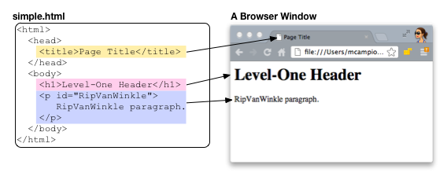
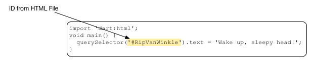
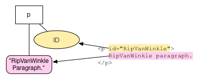
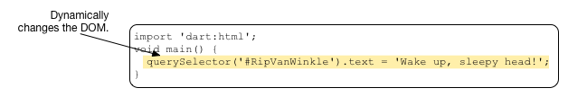

连接 Dart 和 HTML
编写一个微型 Dart 应用。
你需要一些背景知识才能 开始编写 Dart web 应用， 这些知识包括： DOM 树、 节点、 元素、HTML、 Dart 语言和库以及 Dart 编辑器。
这些内容是相互依赖的， 但是我们总要先从某个地方开始， 那么就从一个简单的 HTML 文件开始吧， 在 HTML 文件中用到了 DOM 树和节点。 这里， 你将创建一个最简单的 Dart 应用，该应用只包含了能 从 Dart 程序把文字显示 在网页上的代码。 麻雀虽小五脏俱全， 该示例像你演示了如何把 Dart 应用和 HTML 页面联系起来， 以及 Dart 应用和网页元素交互的一种方式。 这些概念是 更复杂 web 应用的 基础。
- 关于 DOM
- 创建一个新的 Dart 应用
- 编辑 HTML 文件
- 关于 HTML 源代码
- 编辑 Dart 源代码
- 关于 Dart 源代码
- 总结 Dart 和 HTML 的关系
- 运行这个微型 web 应用
- 使用 CSS 来给该应用设置一些样式
- 关于 CSS 选择器
- 其他资源
- 接下来干啥？
关于 DOM
Document Object Model (DOM) 代表 web 文档的树和节点结构。 当一个 HTML 文件载入到浏览器中时， 浏览器解析该 HTML 文件并 在窗口中显示该文档。 下图显示了一个简单的 HTML 文件和 该文件在 Chrome 浏览器中的显示结果。

HTML 用标签来描述文档。 例如，上面的简单 HTML 代码用 <title> 标签来显示页面标题， <h1> 来显示一级标题， <p> 代表一个段落。 在 HTML 中还有一些标签 在浏览器中是不显示的，例如 <head> 和 <body> 标签， 这些标签定义了文档的结构。
在 DOM 中， 文档对象位于一个根节点中， 根节点没有父节点。 不同的节点代表文档中 不同的对象。 例如，树中的 page 元素、 text 节点、和 属性节点。 下图是上面简单 HTML 文件的 DOM 树结构。

注意，有些标签通过多个节点来表示， 例如 <p> 段落标签。 段落自身为一个元素节点。 里面的文字是一个 text 节点 （在某些情况下，也可能是一个包含很多节点的子树）。 ID 是属性节点。
除了根节点，树中的每个节点都只有一个父节点。 每个节点可以有多个子节点。
HTML 文件定义了文档的初始结构。 Dart 或者 JavaScript 可以通过 添加、删除、和修改节点来动态的修改文档结构。 当 DOM 改变后， 浏览器会立即重新渲染文档。

该小段 Dart 代码演示了通过 改变一个段落的文本内容 来动态修改 DOM 模型。 代码可以添加或者删除节点， 甚至可以插入整个子树节点。
创建一个新的 Dart 应用
该教程中的应用为一个 web 应用。
Web 应用使用 browser 包中的代码在浏览器
中运行，
因此即使是一个最小的 web 程序
也需要从一些文件和包开始。
在 Dart 编辑器中，按照
开始中
介绍的一样创建一个新的 web 应用，
命名为 mini。
编辑 HTML 文件
Dart 编辑器创建一个应用的时候，
也会创建一些模板 HTML 代码。
双击 mini.html 打开该文件。
使用如下的代码替代该
文件内容。
<!DOCTYPE html>
<html>
<head>
<title>A Minimalist App</title>
</head>
<body>
<p id="RipVanWinkle">
RipVanWinkle paragraph.
</p>
<script type="application/dart" src="mini.dart"></script>
<script src="packages/browser/dart.js"></script>
</body>
</html>
通过菜单 File > Save 来保存文件。
关于 HTML 源代码
上面的 HTML 代码看起来和之前教程 中的代码有点类似。 可以看到再次使用了 <head>、<title>、 <body>和 <p> 标签。 这里的段落标签有个名字为 “RipVanWinkle” 的 ID 属性。 下一步创建的 Dart 代码将通过该 ID 来 查找该段落元素。
注意上面的 script 标签。
上面的脚本来自于客户端文件。
这里有两个脚本文件。

第一个脚本文件包含了 mini 应用的代码。
type 属性指定了该脚本的类型
为 Dart 团队为 Dart 语言创建的
新类型 application/dart。
当前，只有 Dartium 浏览器支持
application/dart 类型。
src 属性告诉浏览器脚本文件的位置。
这里的 Dart 代码为 mini.dart，
下一步我们将创建这个文件。
Dart 代码文件应该和应用它的 HTML 文件放到同一个目录下。
第二个 script 标签引用了
一个负责启动 Dart VM 的引导程序，
并且处理不支持 Dart 的浏览器。
编辑 Dart 源代码
打开 mini.dart 文件并修改
为如下代码：
import 'dart:html';
void main() {
query('#RipVanWinkle').text = 'Wake up, sleepy head!';
}
关于 Dart 源代码
来逐步看看这些代码。
导入库
import 命令导入了一个特别的库， 这样你的程序就可以使用 这个库中的所有类 和函数了。

这里导入了 Dart 的 HTML 库， 该库包含了对 DOM 编程的关键类和函数。 如下是一些关键的类：
| Dart 类 | 描述 |
|---|---|
| Node | 实现一个 Dart 节点。 |
| Element | Node 的子类，实现了网页的元素。 |
| Document | Node 的另外一个子类，实现了 document 对象。 |
Dart core 库中包含了另外一个常用的类， List， 是一个可以指定成员类型的泛型类。 在 List<Element> 中来保存 Element 的对象。
使用 query() 函数
该 应用的 main() 函数包含了一行 代码，这行代码一步一步的执行了 多个操作。下面就来 拆解该行代码。
query() 是由 Dart HTML 库提供的顶级函数， 该函数从 DOM 中获取一个 Element 对象。

query() 的参数为一个字符串， 该字符串为一个 CSS 选择器来指定要查询的对象。 常用的 CSS 选择器有 类选择器、ID 选择器和属性选择器。 后面当我们使用 CSS 文件的时候 再来详细看看这些选择器。 上例中 RipVanWinkle 是 HTML 文件中 段落的唯一 ID， #RipVanWinkle 指定了该 ID。

另外一个从 DOM 中查找元素的常用函数为
queryAll()，
该函数便利 DOM 树并返回
所有符合条件的 Element 对象，
返回结果为 List
设置 Element 的文本内容
在 DOM 中， 页面元素的文本内容包含 在一个文本子节点中。 在下图中， 包含字符串 “RipVanWinkle paragraph.” 的节点为文本节点。

复杂的文字， 例如 带有样式的文字或者 中间嵌有链接和图片的文字， 将由文本节点的子树和其他对象组成。
在 Dart 中，
你可以简单的用 Element 的 text 属性
来获取文本，
该属性会遍历该节点的所有子节点来提取里面的文字。

但是在带有样式的文本节点中， 获取文本然后立即设置一个文本很有 可能会改变 DOM 树结构， 会导致丢失一些文本子节点信息。 在上面这个 RipVanWinkle 示例中并没有这种情况发生。
赋值操作符 (=) 设置 query() 函数返回的 Element 的 文本内容为 “Wake up, sleepy head!” 字符串。

这样就导致了浏览器立即 重新渲染该页面， 这样就动态的更新了浏览器页面的内容。
总结 Dart 和 HTML 的关系
下图总结了 mini.dart 和 mini.html 之间
的联系。
运行这个微型 web 应用
在 Dart 编辑器中，
选择 mini.html 然后点击 Run 按钮
来运行该应用。
Dart 编辑器将调用 Dartium 来
加载 mini.html 文件。
下面是在一个 frame 中运行该 mini 应用。
显示了由 Dart 代码提供的文本
“Wake up, sleepy head!” 而不是
在 HTML 文件中设置的文本。
Dart web 应用在浏览器中 动态的修改文本内容。 上例只是一个 简单的示例 Dart 代码 如何工作， 以及 Dart 代码如何 和浏览器页面直接相互关联。
使用 CSS 来给该应用设置一些样式
大多数的 HTML 使用 cascading style sheets (CSS) 来定义控制页面 元素_样式_的规则。 下面我们也来自定义一个 mini 应用的 CSS 文件。
在 Dart 编辑器中，修改名字为 mini.css 的文件，
替换后的内容如下：
#RipVanWinkle {
font-size: 20px;
font-family: 'Open Sans', sans-serif;
text-align: center;
margin-top: 20px;
background-color: SlateBlue;
color: Yellow;
}
上面的 CSS 代码定义了
ID 为 RipVanWinkle 的
元素样式。
编辑 mini.html 文件在里面添加如下
一行代码来使用该 CSS 文件。
保存文件，并再次运行该应用。
下面是新的应用界面， 具有一点点色彩，但是 仍然不具有互动性也不吸引人。
关于 CSS 选择器
在 HTML 中 有 ID、 class、 和其他信息 组成。 你的 Dart 代码可以用这些信息来 组成查询元素的 CSS 选择器 - CSS 选择器是一个从 DOM 中查询匹配元素的模式。 CSS 选择器让 CSS 、 HTML、 和 Dart 代码可以 引用同一个对象。 通常，一个选择器指定了一个 ID、 、HTML 元素类型、 类、或者一个属性。 选择器也可以嵌套。
在 Dart 程序中 CSS 选择器非常重要， 因为你可以用他们作为参数来调用函数 query() 或者 queryAll() 从 DOMO 中查询匹配的元素。
下面是 CSS 选择器的一些实例：
| 选择器类型 | 示例 | 描述 |
|---|---|---|
| ID 选择器 | #RipVanWinkle | 匹配一个唯一的元素 |
| HTML 元素 | p | 匹配所有段落 |
| HTML 元素 | h1 | 匹配所有一级标题 |
| Class | .classname | 匹配所有类名字为 classname 的元素 |
| 星号 | * | 匹配所有元素 |
| 属性 | input[type=”button”] | 匹配所有 button 输入元素 |
来看看 mini 应用的 CSS 代码。 mini 应用的 CSS 代码包含一个 CSS 规则。 CSS 规则包含两个主要部分：一个选择器和一组定义语句。

在 mini 应用中 选择器 #RipVanWinkle 是一个 ID 选择器， 由 # 符号开头； 该选择器匹配 ID 为指定值的单一元素， 这里为 RipVanWinkle 段落元素。 RipVanWinkle 是 HTML 文件中的元素 ID。 在 CSS 文件和 Dart 代码中用 # 符号 引用。 类名在 HTML 文件中是通过 圆点(.) 符号定义的， 在 CSS 文件和 Dart 代码中也是通过 圆点(.) 符号引用的。
在花括号里面是一些 CSS 定义语句， 每个由分号(;)结尾。 每个语句指定了属性和值。 这些语句一起定义了所有匹配属性的 style sheet(样式表)。 样式表设置网页中匹配元素的外观样式。

用于 RipVanWinkle 段落的 CSS 规则 指定了几个属性，例如 设置了文本颜色为 黄色。
其他资源
- Dart: Up and Running 覆盖了 Dart 语言、库和工具的一本书。 如果这里没有涉及到的主题， 你可以在该书中找到。
- Dart 编辑器， 节选自 Dart: Up and Running 一书， 详细介绍了 Dart 编辑器的功能。 包含 如何使用 Dart 编辑器的主要功能： 代码完成、重构、设置运行环境等。
- 不要忘了看看 Dart Cookbook， 这里具有很多操作 DOM 和使用 CSS 的技巧。 该书还介绍了 Dart 基本数据类型，例如 strings、 lists、 maps、 和 numbers。
接下来干啥？
在下一个教程中，在 DOM 中添加元素， 将告诉你如何通过在 DOM 中添加元素 来动态的修改 HTML 页面。